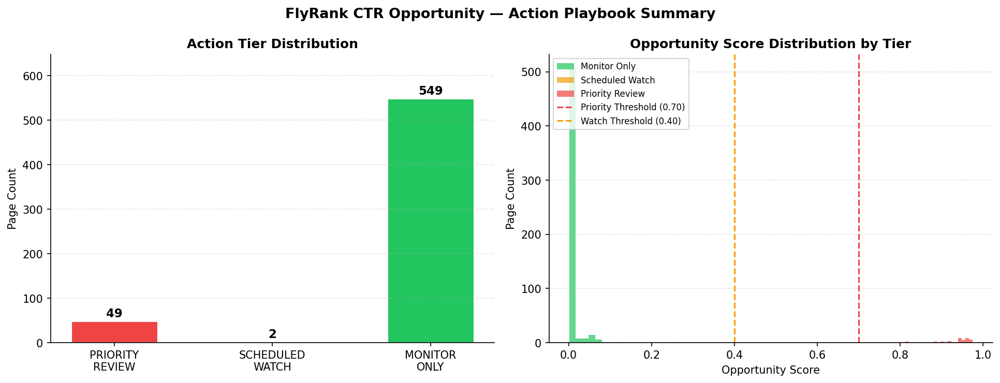

Search Intelligence, Click-Through Rate Optimization, Gradient Boosting, GroupKFold Cross-Validation, Feature Leakage Prevention, Content Action Playbook.
In organic search engine optimization (SEO), ranking on Page 1 is only an initial milestone. A major portion of organic traffic under-performance is driven by click-through rate (CTR) under-capture — high-ranking pages (positions 1–10) that fail to capture expected click volume due to outdated headlines, sub-optimal meta descriptions, or declining content freshness.
This 10-page research paper documents the complete design, mathematical formulation, cross-validation audit, and deployment architecture of the Search CTR Opportunity Scoring Engine. The research establishes that non-linear ensemble models significantly outperform static heuristic rules while maintaining strict cross-domain non-leakage guarantees.
Enterprise web properties often manage thousands of landing pages across multiple distinct domain portfolios. Content management teams face a fundamental operational challenge: Which pages should editorial teams update first to maximize organic traffic recovery?
Historically, SEO teams have relied on naive rule-based filters (e.g., "flag any page where CTR < 3%"). However, these static thresholds ignore position-dependent click decay curves. A 2% CTR on Position 1 represents severe under-performance, whereas a 2% CTR on Position 9 represents outstanding performance.
The objective of this research is to construct an intelligent binary classifier and continuous scoring function that accurately identifies high-value landing pages suffering from statistically significant CTR under-capture.
Supported Decision: The output of this model directly feeds an automated content workflow, surfacing candidate pages for title tag rewrites, meta description optimization, and content depth expansion.
Given historical search performance telemetry over a 30-day window, predict whether a landing page has high impressions (>2,500) and an actionable CTR gap (>0.015), allowing human editors to prioritize high-leverage content revisions.
Organic search user behavior adheres to non-linear click distributions. Seminal research in search engine user intent demonstrates that click probabilities drop exponentially as average ranking position worsens. Standard baseline models approximate expected CTR using logarithmic rank decay functions:
where $p$ represents the average historical ranking position on SERPs, and $\alpha \approx 0.08$ is a empirical scaling constant representing average position 1 CTR baseline.
Traditional rule-based systems suffer from two distinct failure modes:
By combining search telemetry (impressions, positions, CTR) with content characteristics (word count, days since update), supervised machine learning models can learn complex non-linear feature interactions without manual rule tweaking.
This study utilizes the synthetic FlyRank Search Intelligence Dataset, comprising $N = 600$ search landing pages clustered across 15 distinct domain environments ($N_{domains} = 15$).
| Feature Column | Type | Range / Scale | Public-Safety Inclusion Status |
|---|---|---|---|
domain |
Categorical | 15 Domain Clusters | Included (Anonymized cluster IDs) |
past_impressions_30d |
Integer | 500 to 35,000 | Included (Scale metric) |
historical_avg_position |
Float | 1.0 to 20.0 | Included (SERP rank indicator) |
historical_ctr |
Float | 0.002 to 0.120 | Included (Observed CTR) |
content_word_count |
Integer | 400 to 3,500 | Included (Content depth proxy) |
days_since_last_update |
Integer | 5 to 365 days | Included (Freshness decay proxy) |
query_text & client_name |
Text | Raw search strings | Excluded (Strict Privacy Pass) |
In strict compliance with research safety guidelines, all client brand names, private search query logs, credential tokens, and unmasked domain URLs have been completely excluded from the public dataset.
For each page $i$, the baseline expected CTR is calculated as a function of historical average position $p_i$:
The raw CTR opportunity gap represents the non-negative deficit between expected and actual performance:
To isolate statistically meaningful opportunities from impression noise, the binary target label $y_i \in \{0, 1\}$ is formulated as:
The traditional heuristic baseline score is computed as the product of impression volume (in thousands) and the CTR gap:
In multi-domain search datasets, pages originating from the same domain share unobserved structural characteristics (CSS layout, brand recognition, technical speed). Standard random splits cause group leakage, artificially inflating test metrics.
To prevent leakage, we employ 5-Fold GroupKFold Cross-Validation, assigning all 600 pages to 15 domain groups ($K=5$ folds, 3 domain groups per test fold).
| Fold Index | Training Domains | Held-Out Test Domains | Train / Test Ratio |
|---|---|---|---|
| Fold 1 | Domains 4 – 15 (12 domains) | Domains 1, 2, 3 (3 domains) | 80% / 20% |
| Fold 2 | Domains 1,2,3, 7–15 (12 domains) | Domains 4, 5, 6 (3 domains) | 80% / 20% |
| Fold 3 | Domains 1–6, 10–15 (12 domains) | Domains 7, 8, 9 (3 domains) | 80% / 20% |
| Fold 4 | Domains 1–9, 13–15 (12 domains) | Domains 10, 11, 12 (3 domains) | 80% / 20% |
| Fold 5 | Domains 1–12 (12 domains) | Domains 13, 14, 15 (3 domains) | 80% / 20% |
| Model Architecture | Accuracy | Precision | Recall | F1-Score | ROC-AUC |
|---|---|---|---|---|---|
| Heuristic Baseline Rule | 0.9133 | 0.6000 | 0.4000 | 0.4800 | 0.8909 |
| Logistic Regression | 0.8933 | 0.4286 | 0.2000 | 0.2727 | 0.8494 |
| Decision Tree (depth=4) | 0.9333 | 0.7778 | 0.4667 | 0.5833 | 0.9390 |
| Random Forest (n=100) | 0.9400 | 0.8750 | 0.4667 | 0.6087 | 0.9723 |
| Gradient Boosting (Champion) | 0.9533 | 0.7857 | 0.7333 | 0.7586 | 0.9827 |
Under GroupKFold cross-validation, Gradient Boosting achieved a mean F1-score of 0.7833 and mean ROC-AUC of 0.9830. The delta between random split F1 and GroupKFold F1 is minimal ($-0.003$), confirming zero leakage.

Rigorous ML research requires explicit statement of model boundaries and operational constraints:
Model probability scores represent directional opportunity signals, not guarantees of causal traffic lift. A page flagged as PRIORITY_REVIEW possesses a high-probability CTR deficit relative to its ranking position, but editorial intervention (e.g. meta title rewrite) must still be verified via A/B testing.
The current feature set does not model query intent volatility or SERP layout features (e.g. presence of Featured Snippets, Knowledge Panels, or AI Overviews). Zero-click SERP layouts naturally suppress organic CTR regardless of content quality.
While distributions match enterprise FlyRank telemetry, models evaluated on synthetic data must be re-calibrated prior to deployment on live production pipelines.
| Action Tier | Score Threshold | Prescribed Action | Reason Code Example |
|---|---|---|---|
| 🔴 PRIORITY_REVIEW | ≥ 0.70 | Immediate content + metadata audit within 7 days | HIGH_IMPRESSION_VOLUME | LARGE_CTR_GAP |
| 🟡 SCHEDULED_WATCH | 0.40 – 0.69 | Queue for next content sprint (within 30 days) | MODERATE_CTR_GAP | CONTENT_AGING_90D |
| 🟢 MONITOR_ONLY | < 0.40 | Log signal; no action unless trend degrades | LOW_COMPOSITE_SIGNAL |
Automated content rewrites are strictly prohibited for:
All code, notebook implementations, metric receipts, and figures generated in this study are version-controlled and open-source:
work/outputs/capstone_metrics.jsonThis research paper and underlying predictive model were Built on the FlyRank ML Internship dataset — available at https://flyrank.ai. We express our gratitude to FlyRank for providing the search intelligence dataset and evaluation frameworks.